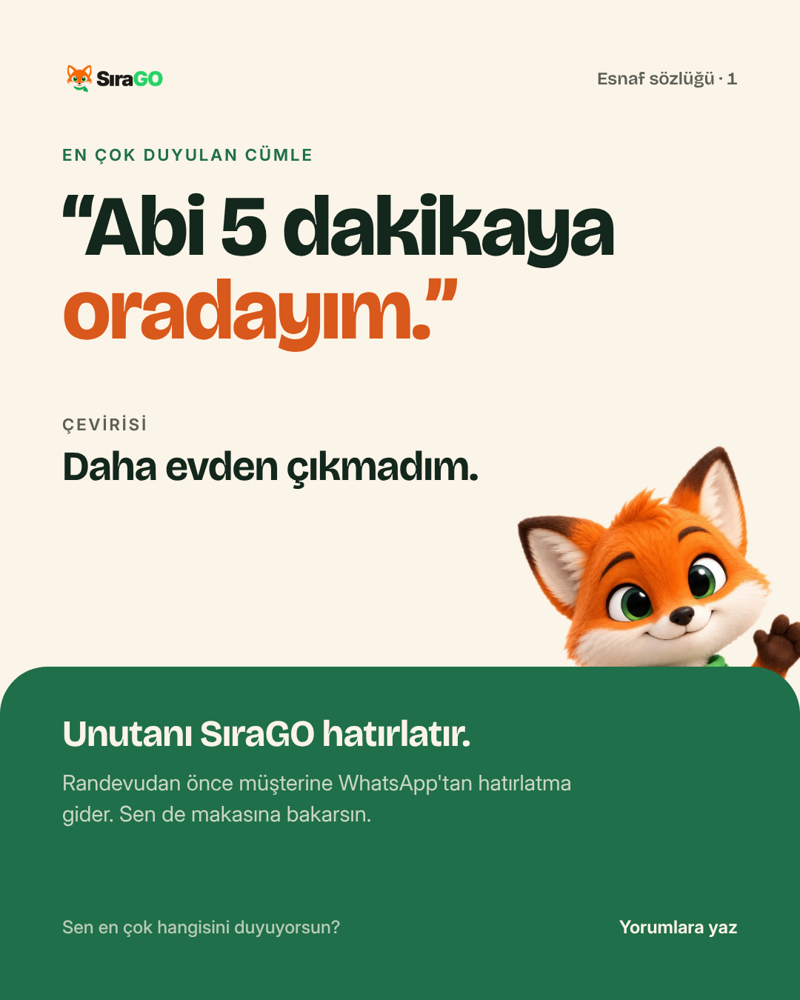

08 · Maskot
Tilki seyircidir, satıcı değil.
Tilki sıcaklık katar ama her karede olursa ucuzlar. Yalnız üç yerde çıkar; ürünü anlatan ve güven veren içerikte hiç yoktur.

Evet
- Esnaf mizahı gönderileri ve 3D mizah Reels'leri (kapakları dahil).
- Öne çıkan kapakları: ilk kapak tilki yüzü.
- Profil fotoğrafı: yalnız burada düz tilki.
Hayır
- Ürün anlatımı, Reels ürün sahneleri, fiyat, kapanış/çağrı sayfaları.
- Güven ve şikâyet içerikleri: ciddi konuda maskot hafife alıyor gibi durur.
- Sahte yorum ya da “müşteri” gibi konuşturma.
Nasıl kullanılır
- Profil fotoğrafı düz tilki; içerik ve öne çıkan kapakları 3D tilki (tasarim/varliklar/tilki-3d-temiz.png).
- Krem zeminde, yeşil bloğun ya da alt kenarın arkasından “bakar”.
- Metne değmez, başlığın üstüne binmez; karenin en fazla üçte biri.
- Konuşma balonu yok. Tilki susar; söz başlığındır.
- Ayna, döndürme, renk değiştirme yok. Tek poz, tek yüz.
- Yeni poz gerekirse aynı 3D karakterden üretilir; düz ve 3D aynı karede karışmaz.